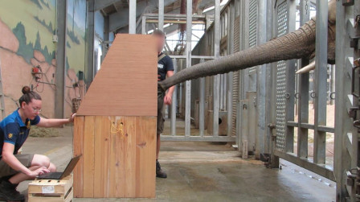
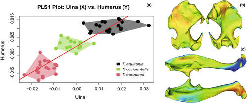

Projets
Mes principales expériences de recherche et de terrain.
Recherche

Doctorat mené au sein des unités ISYEB & MECADEV au Muséum National d'Histoire Naturelle. Encadrants : Emmanuelle Pouydebat & Raphaël Cornette. Projet interdisciplinaire combinant éthologie, morphologie fonctionnelle et bio-inspiration pour la robotique. Inclut des missions de terrain au ZooParc de Beauval et au Cambodge (Elephant Valley Project, 10/2024).

Stage au sein de l'unité ISYEB (CNRS/MNHN). Encadrants : Raphaël Cornette & Arnaud Delapré. Analyse comparative morpho-fonctionnelle de l'humérus et de l'ulna chez trois espèces de taupes d'Europe de l'Ouest, incluant la nouvelle espèce Talpa aquitania. Ce travail a abouti à une publication dans le Journal of Anatomy (2022).
Stage au sein du PZP & MECADEV (CNRS/MNHN). Encadrants : Emmanuelle Pouydebat & Luca Morino. Étude de l'utilisation fonctionnelle des nageoires chez les lamantins des Antilles. Ce stage a directement inspiré l'encadrement d'un stagiaire en 2022 sur la latéralité chez la même espèce.
Stage à la Ménagerie du Jardin des Plantes (CNRS/MNHN). Encadrante : Aude Bourgeois. Étude du bien-être des animaux en milieu zoologique. Premier contact avec le milieu de la recherche en éthologie appliquée et la gestion des populations en captivité.
Stage à la Station d'Écologie Théorique et Expérimentale de Moulis (Ariège). Encadrant : Maxime Cauchoix. Suivi de la reproduction des mésanges charbonnières et bleues, capture d'individus, analyse de données issues de pièges photographiques.
Enseignement & encadrement
Encadrement de 2 groupes de Licence 3 sur 48h. Préparation et animation de séances de travaux pratiques en psychobiologie comparée. Adaptation du contenu au niveau des apprenants, évaluation des étudiants.
Encadrement de 4 groupes de Licence 1 sur 16h. Introduction à la systématique et à la diversité du monde du vivant. Première expérience d'enseignement en biologie fondamentale pour des étudiants de premier cycle.
Conception et suivi d'un projet individuel portant sur la latéralité chez les lamantins des Antilles au ZooParc de Beauval. Accompagnement, formation aux méthodes éthologiques, évaluation des compétences et bienveillance.
Médiation scientifique pour lycéens via le Cercle FSER (Déclics, 12/2023, 4h) et mentorat via le Programme Savanturiers de l'AFPER (03–05/2022). Vulgarisation de la démarche scientifique et accompagnement personnalisé de jeunes.